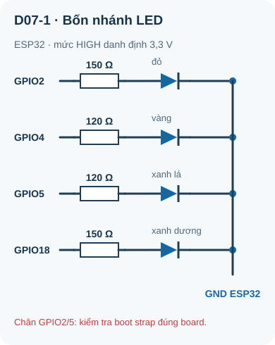
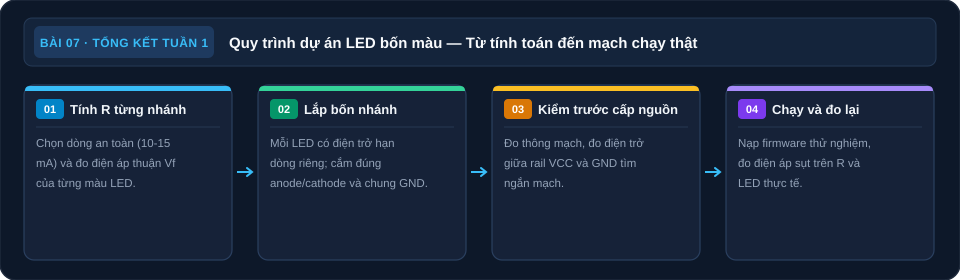

Ôn Tập Tuần 1 & Mini Project: Mạch LED Đa Màu
Củng cố toàn bộ kiến thức Tuần 1 và hoàn thành mini project — mạch LED 4 màu có điện trở hạn dòng riêng, nối với ESP32 GPIO.
- Ôn tập và tự kiểm tra toàn bộ kiến thức Tuần 1
- Thiết kế mạch LED 4 màu từ yêu cầu đến sơ đồ đến thực hành
- Tính toán R hạn dòng cho từng LED với nguồn 3,3V (ESP32)
- Lắp mạch hoàn chỉnh trên breadboard
- Kiểm tra từng kết nối bằng continuity trước khi cấp điện
- Đo điện áp và dòng kiểm chứng từng nhánh LED
- Nối mạch vào GPIO ESP32 và bật/tắt LED bằng code cơ bản
- Viết báo cáo debug theo format kỹ thuật
1. Ôn tập nhanh — Kiến thức Tuần 1
Trước khi bắt đầu project, hãy tự kiểm tra: bạn có thể trả lời không cần nhìn tài liệu không? Nếu còn thấy lúng túng với câu nào, hãy quay lại bài tương ứng đọc lại.
| Câu hỏi nhanh | Đáp án (che lại trả lời xong mới nhìn) |
|---|---|
| Điện áp là đại lượng tương đối — nghĩa là gì? | Luôn cần điểm tham chiếu; thay đổi GND thì giá trị điện áp thay đổi |
| GND trong mạch breadboard là gì? | Điểm tham chiếu 0V — thường là cực âm nguồn, không phải "đất thật" |
| Continuity test dùng để làm gì? | Kiểm tra hai điểm có nối điện với nhau không — chỉ dùng khi mạch TẮT điện |
| Mã màu: Nâu·Đen·Cam·Vàng = ? | 10 × 1k = 10kΩ ±5% |
| Công thức tính R hạn dòng LED? | R = (V_supply – V_f) / I_f |
| Mạch song song: áp hay dòng bằng nhau? | Áp bằng nhau; dòng chia theo giá trị R |
| Công thức cầu chia áp V_out? | V_out = V_in × R2 / (R1 + R2), trong đó R2 là điện trở phía GND |
| KVL phát biểu gì? | Tổng điện áp quanh vòng kín = 0; hay V_nguồn = tổng V_rơi trên tải |
| V_f LED đỏ điển hình? | 1,8–2,2V |
| V_f LED xanh dương điển hình? | 3,0–3,5V (cẩn thận với nguồn 3,3V) |
2. Mini Project: Mạch LED 4 Màu với GPIO ESP32
2.1 Yêu cầu kỹ thuật (Requirements)
- Mức HIGH của GPIO là 3,3 V; mỗi GPIO cấp dòng cho một LED qua điện trở riêng
- 4 LED: đỏ, vàng, xanh lá, xanh dương — mỗi cái trên một nhánh riêng
- Mỗi LED có điện trở hạn dòng riêng, tính cho I_f = 10 mA
- 4 LED được nối với GPIO2, GPIO4, GPIO5, GPIO18 của ESP32
- Firmware: blink tuần tự (đỏ → vàng → xanh lá → xanh dương → lặp)
- Sau khi lắp xong: đo V và I thực tế của mỗi nhánh LED
2.2 Bước 1 — Tính toán R hạn dòng
Nguồn: V_supply = 3,3V. I_f = 10 mA = 0,01 A. Công thức: R = (V_supply – V_f) / I_f
| LED | V_f điển hình | R tính (Ω) | R chọn E24 (Ω) | I_f thực tế (mA) |
|---|---|---|---|---|
| Đỏ | 2,0 V | (3,3 – 2,0) / 0,01 = 130 Ω | 150 Ω | (3,3–2,0)/150 = 8,7 mA ✓ |
| Vàng | 2,1 V | (3,3 – 2,1) / 0,01 = 120 Ω | 120 Ω | (3,3–2,1)/120 = 10,0 mA ✓ |
| Xanh lá | 2,2 V | (3,3 – 2,2) / 0,01 = 110 Ω | 120 Ω | (3,3–2,2)/120 = 9,2 mA ✓ |
| Xanh dương | 3,2 V | Không thiết kế theo V_f danh định 3,2 V vì sai số rất nhạy | 150 Ω | Nếu V_f=2,8 V: ~3,3 mA; nếu V_f≥3,3 V: không sáng |
LED xanh dương có V_f thay đổi theo mẫu và dòng đo. Dùng R 150 Ω để giới hạn dòng ngay cả khi V_f thấp hơn dự kiến; LED có thể sáng yếu hoặc không sáng ở mức GPIO HIGH 3,3 V. Nếu cần cả bốn nhánh sáng rõ, thay LED xanh dương bằng LED đỏ thứ hai, hoặc thiết kế một driver riêng cho LED chạy nguồn 5 V. Không nối nguồn 5 V trực tiếp vào GPIO ESP32 và không giảm R xuống 10–22 Ω.
2.3 Bước 2 — Sơ đồ mạch

Đọc mô tả D07-1
GPIO2 qua 150 Ω và LED đỏ về GND; GPIO4 qua 120 Ω và LED vàng về GND; GPIO5 qua 120 Ω và LED xanh lá về GND; GPIO18 qua 150 Ω và LED xanh dương về GND. Anode mỗi LED ở phía điện trở, cathode về GND. Kiểm tra đúng bo mạch, chức năng chân và trạng thái boot trước khi lắp.
2.4 Bước 3 — Lắp mạch trên breadboard
Chuẩn bị (chưa cắm ESP32): Đặt breadboard. Tạo rail GND (kẻ đen) ở phía dưới breadboard, nối với GND của nguồn (chưa cấp điện).
Cắm LED 4 màu: Mỗi LED chiếm 2 hàng riêng biệt theo chiều ngang. Ví dụ: LED đỏ — anode vào cột 10 hàng a, cathode vào cột 12 hàng a. Đảm bảo anode (chân dài) và cathode (chân ngắn) đúng chiều.
Cắm điện trở: Một đầu nối vào anode LED (cùng nhóm 5 lỗ), đầu kia để trống — sẽ nối dây GPIO sau.
Nối cathode vào GND: Dây đen từ cathode (cùng nhóm) → rail GND phía dưới.
Continuity test (chưa cấp điện):
– Test: lỗ ở đầu điện trở sát LED ↔ lỗ anode LED cùng một nhóm: beep. Không trông chờ beep qua chính điện trở 120–150 Ω vì ngưỡng báo tùy đồng hồ.
– Test: cathode LED ←→ rail GND: beep?
– Test: rail GND ↔ chân GND ESP32 sau khi cắm dây: beep. Ngắt USB khi đo thông mạch.Nối ESP32: Cắm ESP32 vào breadboard (bắc qua rãnh giữa). Nối chân GND của ESP32 → rail GND. Nối chân GPIO2, 4, 5, 18 → đầu tự do của R tương ứng bằng dây jumper màu sắc khác nhau.
Test thủ công trước khi nạp code: Rút dây nối GPIO2 khỏi đầu điện trở LED đỏ, cấp nguồn ESP32 qua USB rồi tạm nối 3V3 vào chính đầu điện trở đó; LED đỏ phải sáng qua R150Ω. Ngắt USB, bỏ dây thử 3V3, sau đó mới nối lại GPIO2. Không nối 3V3 trực tiếp vào một GPIO đang nối mạch.
2.5 Bước 4 — Đo kiểm trước khi nạp code
Nối ESP32 vào PC qua USB. Chưa nạp code — GPIO mặc định là INPUT (floating).
Đo điện áp chân 3V3 của ESP32 so với GND: kỳ vọng 3,2–3,4V.
Đo điện áp chân GPIO2 so với GND khi ở trạng thái INPUT: có thể thấy giá trị bất kỳ (floating) — bình thường.
2.6 Bước 5 — Firmware ESP32
Code Arduino (ESP32 Arduino Core) để blink tuần tự 4 LED:
// Mini Project Tuần 1 — LED 4 màu tuần tự
// Giáo trình Điện Tử Thực Hành
const int LED_DO = 2; // GPIO2 — LED đỏ
const int LED_VANG = 4; // GPIO4 — LED vàng
const int LED_LA = 5; // GPIO5 — LED xanh lá
const int LED_XANH = 18; // GPIO18 — LED xanh dương
const int LED_DELAY = 300; // Thời gian mỗi LED sáng (ms)
void setup() {
// Cấu hình tất cả GPIO là OUTPUT
pinMode(LED_DO, OUTPUT);
pinMode(LED_VANG, OUTPUT);
pinMode(LED_LA, OUTPUT);
pinMode(LED_XANH, OUTPUT);
// Bắt đầu: tắt tất cả LED
digitalWrite(LED_DO, LOW);
digitalWrite(LED_VANG, LOW);
digitalWrite(LED_LA, LOW);
digitalWrite(LED_XANH, LOW);
Serial.begin(115200);
Serial.println("Mini Project LED khởi động...");
}
void loop() {
// Bật từng LED tuần tự
Serial.println("Đỏ");
digitalWrite(LED_DO, HIGH);
delay(LED_DELAY);
digitalWrite(LED_DO, LOW);
Serial.println("Vàng");
digitalWrite(LED_VANG, HIGH);
delay(LED_DELAY);
digitalWrite(LED_VANG, LOW);
Serial.println("Xanh lá");
digitalWrite(LED_LA, HIGH);
delay(LED_DELAY);
digitalWrite(LED_LA, LOW);
Serial.println("Xanh dương");
digitalWrite(LED_XANH, HIGH);
delay(LED_DELAY);
digitalWrite(LED_XANH, LOW);
delay(200); // Pause giữa các vòng
}pinMode(pin, OUTPUT): Cấu hình GPIO là đầu ra — ESP32 có thể điều khiển điện áp (0V hoặc 3,3V)digitalWrite(pin, HIGH): Đặt GPIO = 3,3V → dòng chạy qua R → LED sángdigitalWrite(pin, LOW): Đặt GPIO = 0V → không có dòng → LED tắtdelay(ms): Dừng chương trình ms millisecond — trong thời gian này GPIO giữ nguyên trạng thái
Mỗi GPIO của ESP32 có thể cung cấp tối đa khoảng 40 mA (absolute max), nhưng khuyến nghị thực tế là ≤ 12 mA để đảm bảo tuổi thọ. Tổng dòng tất cả GPIO không vượt 1,2A. Trong project này, I_f = 8–10 mA/LED → an toàn.
2.7 Bước 6 — Đo kiểm sau khi chạy code
| LED | R chọn (Ω) | V_GPIO (V) | V_R đo (V) | I = V_R/R (mA) | V_f đo (V) | V_GPIO = V_R + V_f? |
|---|---|---|---|---|---|---|
| Đỏ | 150 | _____ | _____ | _____ | _____ | _____ |
| Vàng | 120 | _____ | _____ | _____ | _____ | _____ |
| Xanh lá | 120 | _____ | _____ | _____ | _____ | _____ |
| Xanh dương | 10 | _____ | _____ | _____ | _____ | _____ |
3. Viết báo cáo debug theo format kỹ thuật
Một kỹ sư điện tử cần biết ghi chép lỗi và cách xử lý. Dưới đây là format báo cáo debug tiêu chuẩn — bạn điền vào mỗi khi gặp lỗi trong project:
Mô tả triệu chứng: ___________________________________________
LED nào bị lỗi: ___________
Đo điện áp:
V tại GPIO (so với GND): _____ V (kỳ vọng: 3,3V khi HIGH)
V tại anode LED (so với GND): _____ V
V tại cathode LED (so với GND): _____ V (kỳ vọng: ~0V)
V hai đầu điện trở: _____ V
Phân tích (KVL):
V_R + V_LED = _____ + _____ = _____ V (kỳ vọng: ~3,3V)
Nguyên nhân xác định: ___________________________________________
Cách xử lý: ___________________________________________
Kết quả sau xử lý: ___________________________________________
4. Tổng kết Tuần 1 — Những gì bạn đã học được
| Bài | Kiến thức cốt lõi | Kỹ năng thực hành |
|---|---|---|
| Bài 1 | Điện áp, dòng điện, GND, DC/AC, mạch kín/hở | Đo điện áp pin và adapter |
| Bài 2 | Cấu tạo breadboard, continuity test | Lắp mạch LED đầu tiên |
| Bài 3 | Mã màu điện trở, sai số, E24, SMD | Đo và phân loại điện trở |
| Bài 4 | LED, V_f, tính R hạn dòng, công suất | Đo V_f bằng chế độ diode, lắp mạch LED nhiều R |
| Bài 5 | Mạch nối tiếp và song song, R_eq | Đo R và V xác nhận công thức |
| Bài 6 | KVL, KCL, cầu chia áp, loading effect | Cầu chia áp với LDR |
| Bài 7 | Tích hợp toàn bộ + GPIO ESP32 | Mini project LED 4 màu hoàn chỉnh |
Tuần 2 bắt đầu với tụ điện — linh kiện quan trọng thứ hai sau điện trở. Bạn sẽ học tại sao tụ điện xuất hiện trong mọi mạch nguồn và tín hiệu, cách đo nạp/xả, và sau đó là diode — linh kiện bán dẫn đầu tiên. Hãy chuẩn bị thêm: tụ điện 100µF, 10µF, 0,1µF (100nF); diode 1N4007 và 1N4148.
1: R = (3,3–2)/0,008 = 162,5Ω → chọn 150Ω. I = 1,3/150 = 8,7mA ✓
2: V_out = 9 × 10000/(4700+10000) = 9 × 0,6803 = 6,12V
3: 1/R_eq = 1/12k + 1/12k + 1/12k = 3/12k → R_eq = 4kΩ
4: R2||R3 = 2k/2 = 1kΩ. R_total = 1k+1k = 2kΩ. I = 5V/2kΩ = 2,5mA
5: 5 vạch: Cam(3)·Trắng(9)·Đen(0)·Đỏ(×100)·Nâu(±1%) = 390 × 100 = 39kΩ ±1%
6: V_LED = 2,8 – 0 = 2,8V → LED xanh lá (V_f 2,0–2,8V, cao trong dải) hoặc LED xanh dương yếu
7: R2||R_load = 10k||1k = 909Ω. V_out = 5 × 909/(10000+909) = 5 × 0,0833 = 0,42V — loading effect rất lớn!
8: LED không sáng ổn định. GPIO INPUT floating → điện áp không xác định → dòng không kiểm soát được. Để LED hoạt động: cần OUTPUT HIGH.
9: Không có GND chung → hai mạch không có điểm tham chiếu chung → tín hiệu GPIO 3,3V "so với GND của ESP32" không có ý nghĩa với mạch LED. LED có thể không sáng hoặc hoạt động lạ.
10: (1) Continuity test xác nhận tất cả kết nối dự kiến; (2) Đo điện trở tổng để phát hiện ngắn mạch; (3) Xác nhận không có kết nối ngắn mạch giữa VCC và GND.
Sơ đồ tổng hợp Bài 7

Đọc nội dung sơ đồ bằng chữ
- Tính R từng nhánh: Chọn dòng và đo Vf từng màu. (mục Tính toán R hạn dòng).
- Lắp bốn nhánh: Mỗi LED có R riêng; kiểm GND. (mục Lắp mạch trên breadboard).
- Kiểm trước khi nạp: Đo thông mạch và tìm chập nguồn. (mục Đo kiểm trước khi nạp code).
- Chạy và đo lại: Thử firmware, đo từng nhánh. (mục Đo kiểm sau khi chạy code).